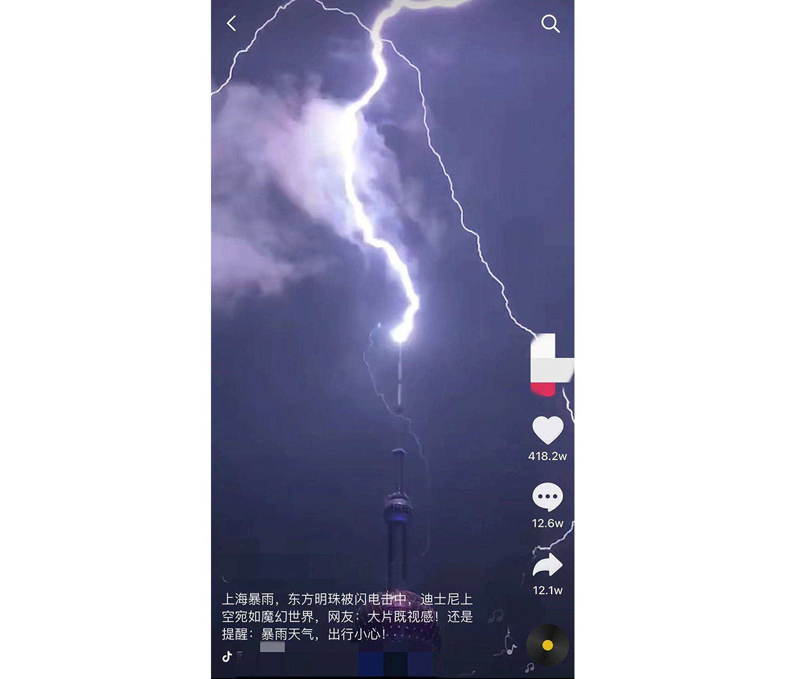
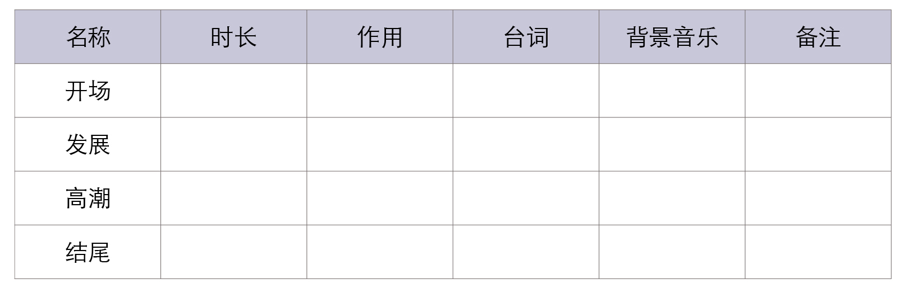
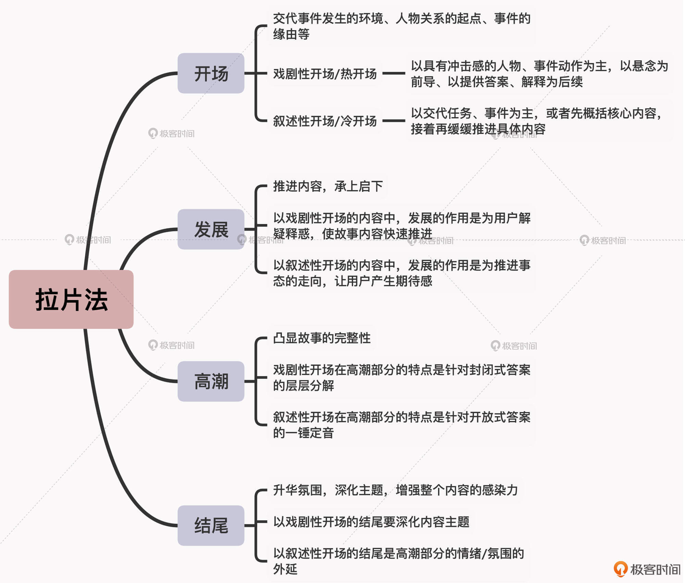

- 00 开篇词 短视频时代下，怎么把握好变现风口？.md
- 01 爆款短视频的底层逻辑：用心拍的短视频为啥没人看？.md
- 02 爆款短视频的底层逻辑：如何轻松打造自我特色？.md
- 03 精益创业法：如何快速跨过从0到1这道坎？.md
- 04 SWOT法：这么明显的个人优势你为啥就是看不到？.md
- 05 效用函数法：如何用量化的方式进行高效创作？.md
- 06 二次创新实验法：如何打造个人的差异化定位？.md
- 07 平台定位：如何选择最适合自己的创作平台？.md
- 08 如何快速找到各大短视频平台的正确切入点？.md
- 09 选题（上）：如何利用思考清单找到合适选题？.md
- 10 选题（下）：如何为不同的内容定制合适选题？.md
- 11 优劣分析法：如何快速筛选适合创作的视频素材？.md
- 12 标题（上）：如何利用微创新巧妙找到爆款标题？.md
- 13 标题（下）：如何用对号入座的方式抓住标题亮点？.md
- 14 视频封面（上）：如何快速抓住用户注意力？.md
- 15 视频封面（下）：如何传递最有价值的信息？.md
- 16 视频剪辑：如何轻松掌握视频化剪辑的三大公式？.md
- 17 效果反馈法：剪辑很容易，为什么你却一直学不会？.md
- 18 剪辑对比（上）：如何避开常见的短视频剪辑陷阱？.md
- 19 剪辑对比（下）：如何利用剪辑技巧提升视频质量？.md
- 20 拉片法：用电影创作的方式学习爆款短视频运营技巧.md
- 21 用户留存率：为什么粉丝很多但忠实拥趸却很少？.md
- 22 点赞率（上）：如何有效提升短视频的点赞量？.md
- 23 点赞率（下）：三种方法轻松提升用户对内容的认可度.md
- 24 上瘾机制：为什么视频观看量很高却没人留言？.md
- 25 避坑指南：为什么很多短视频账号中途做不下去了？.md
- 26 如何找到适合自己的短视频变现模式？.md
- 27 多元化变现：如何明确不同创作阶段的变现任务？.md
- 28 多内容变现：不同内容的主打变现模式是什么？.md
- 结束语 一切成大事者，都是终身学习者.md
20 拉片法：用电影创作的方式学习爆款短视频运营技巧
你好，我是周维。从这节课开始，我们就进入到了课程第四个模块：运营篇。
在这个模块当中，我会从内容运营和数据运营的角度，来带你了解打造爆款短视频的方法和技巧。今天这节课呢，我们先来学习下如何用电影创作的方式，即利用“拉片法”来掌握爆款短视频的内容运营技巧。
看到这里你肯定要问了，什么是拉片法呢？
拉片法其实就是指拉片子，它是学习影视创作时的一种重要方法。简单来说，拉片就是把一部电影或电视剧像拉锯一样，一帧一帧地反复观看、暂停和倒带，并在此过程中去记录、分析和总结作品的视听语言（包括镜头中的内容、景别、机位、剪辑、声音、画面等），以此来深度解读整个作品。
在短视频行业中，很多刚进入这个领域的创作者，往往都不知道什么样的内容运营方式才是正确和有效的，都是跟着感觉走，或者是去模仿其他创作者，所以到最后在内容运营上还是一头雾水。
而拉片子的意义就在于通过细致深入地观摩、解剖那些优质的作品，你能够全面地掌握其中的结构功能、叙事风格、讲解思路及创作细节，并能够以此为据，来对比自己作品中存在的问题和缺漏，从而去加以补充和完善。这样你在做内容运营的过程当中，就知道哪些选题作品应该从哪些细节着手，来提升短视频的质量，进而真正做到有的放矢。
那么具体要怎么做呢？接下来，我就从短视频的内容结构出发，即开场、发展、高潮、结尾四个部分，来带你详细解析一下不同爆款短视频的内容运营特点。
开场
首先是内容的开场。开场就是指短视频内容的开始，它承担着交代事件发生的环境、人物关系的起点、事件的缘由等作用。
开场分为戏剧性开场和叙述性开场两种形式。戏剧性开场也叫做热开场，它是以悬念为前导，以提供答案、解释为后续，特点是戏剧动作多，可以瞬间吸引目光；而叙述性开场也叫做冷开场，它则是通过叙述内容来完成开场任务的，也就是先为观众概括下主要的人物关系或前提任务，然后再缓缓推进后续事件的发展。
我给你举个例子。假设现在要展现这样一个场景：小明和小丽是一对情侣，他们好久没有见面了。
- 如果是用热开场来表达的话：
两个人刚一见面，还没有说话，小丽“啪”地一下打了小明一个耳光，然后嘴里骂他是个负心汉，小明呆住了。
像这样的热开场就是以具有冲击感的人物动作为起始，这就像是往水中丢入了一个大石头一样，会猛然地溅起巨大水花，从而带给用户紧张、刺激的观看感受。而且用户看后还会很纳闷，想探究人物之间到底发生了什么事情，比较具有悬念性，这样用户就想要继续往下观看。
- 如果是用冷开场来表达的话：
两个人终于见面了，彼此都有一肚子想说的话，可是两个人都没有急着表达，而是先紧紧拥抱在一起，然后一起坐了下来，慢慢诉说心中真挚的感情。
你看，冷开场虽然不如热开场那样猛烈，但是它对外传递的感情会像涓涓细流一样，可以打动人心。
冷开场与热开场也是爆款短视频常用的运营技巧。我们可以通过这样的方式，以一个具体的场景来吸引用户的注意力和观看兴趣，进而就可以有效提升视频的播放量。
我给你举个例子。“央视新闻”在自己的账号上发布了内容为“巨大的火球升起，俄罗斯一加油站发生爆炸”的短视频，短短时间内播放量就达到了1500万之多。视频的开始就是巨大的火焰升起，并伴随着巨大的爆炸声，然后才是介绍整个事件的来龙去脉。这就是典型的戏剧性开场，以热动作事件作为开场，可以瞬间吸引用户的注意力。
再举个例子。B站UP主“老师好我叫何同学”创作了一条名为“我拍了一张600万人的合影”的视频，收获了1200多万的播放量。视频的开始就采用了叙述性开场，何同学先讲述了自己为什么要拍一张600万人合影，然后自己是通过什么设备拍摄的。接下来就是讲述自己是如何实现这件看起来非常不容易做成的事情。这种看似平淡的冷开场，先交代了主要任务，明确了主题，然后娓娓道来，同样可以吸引用户驻足观看。
所以，我们在做内容运营的过程中，就可以通过把握好热开场与冷开场的使用特点来提升自己作品的吸引力，具体包括以下两点：
- 热开场：以具有冲击感的人物、事件动作为主，以悬念为前导、以提供答案、解释为后续。
- 冷开场：以交代任务、事件为主，或者先概括核心内容，接着再缓缓推进具体内容。
另外我需要提醒你，虽然热开场是以动作性的事件作为开场，来瞬间吸引用户的注意力，但是不能哗众取宠、故弄玄虚；而冷开场是以平静地叙述作为开场方式，通过阐述一个观点来表达想要完成的任务，从而让用户跟随自己的内容一同见证事情的成败，虽然冷开场的开头是平淡的，但结尾要具有升华、启迪的作用。
发展
我们再来看看拉片法中的第二个部分：发展。顾名思义，在短视频创作中，发展主要承担着推进内容和承上启下的作用。
同样，在以戏剧性开场和以叙述性开场的内容中，发展的作用是不一样的。在以戏剧性开场的短视频内容中，发展的作用是为用户解疑释惑，然后将已经确定的叙事中心快速向前推进；而在以叙述性开场的内容中，发展的作用主要是为了推进事态的走向，进而吸引用户的观看兴趣。
我给你举个例子。短视频创作者“红星新闻”创作了一期标题为“女子骑自行车掉入积水中，危机时刻他们出手相助，不顾跑丢的鞋子奔向女子”的内容，在抖音上获得了1600多万人的点赞。这是一个典型的以戏剧性开场的视频内容，视频长度为21秒，前4秒直接展现了女孩骑车掉进不知深浅的积水中，以悬念的方式来吸引用户观看。
接着在“发展”中，一旁站着与人聊天的一名男子赶紧前来搭救，搭救时手中的雨伞也掉落一旁。同时，与该男子一同聊天的女性同伴也放下电动车，顾不上打伞伸手搭救……
可见，在以戏剧性开场的视频中，发展的作用就是使故事内容快速推进，不用过多交代更多人物与事件的信息，比如掉入积水坑的女子多大年龄、搭救的两个人为什么在聊天等等，这些信息不是用户关注的，大家关注的焦点是：赶紧救人。
我们再来看看另一个以叙述性开场的例子。创作者“天津一家人”在快手上发布了“婆婆说谁先吃到硬币，钱就归谁”的内容，播放量达到了6000多万。这条短视频时长13秒，视频内容是这样的：儿媳与婆婆坐在餐桌边准备吃饭，桌上有一盘芹菜香干、一盘鱼香肉丝，还有两盘饺子。另外，桌子中间放了100块，还有一个纸杯。
视频开始，两个人都准备快速吃饺子，在“发展”部分，儿媳突然放下饺子，假装涂口红，趁婆婆不注意用另外一只手把有磁力的小东西放入旁边的纸杯中，拿起纸杯开始扫描盘中的饺子……
可见，这条视频中发展的作用，就是通过儿媳如何拿到硬币来制造悬念，以此快速推进事件的发展，让用户产生期待感。
所以，我们在做内容运营的过程中，就可以通过把握好两种不同的发展内容的方式，来提升自己作品的吸引力，具体包括以下两点：
- 以戏剧性开场的内容，在发展部分暂时不用去考虑更多的前因后果，只需要将开场中的事件向前推进一步就可以了。
- 以叙述性开场的内容，在发展这个部分一定要注意围绕既定的事件或目标向前推进，只有这样才能让用户产生期待感，想要去一探究竟。
高潮
在短视频创作中，高潮部分的主要作用是凸显故事的完整性，也就是要有因有果的解释，或者是能给予答案。戏剧性开场与叙述性开场在高潮部分的最大区别是：前者是封闭式答案的层层分解，后者是开放式答案的一锤定音。
怎么理解层层分解与一锤定音呢？我给你举个例子就明白了。
前面我提到的“女子掉入积水中”的视频内容是以戏剧性作为开场：开场中一名骑车女子在大雨里不小心掉入了积水中；在“发展”中，路边的一男一女跑过来施救，但没有显示落水的女子救出来了没有。
而在内容的高潮部分，从马路对面又跑过来了一名男子准备施救该落水女子，而此时恰好落水女子被之前的两人从水坑中拖拽出来。在这部分，视频中就给出了准确的答案，让用户的期待终于有了归宿。同时，高潮部分也给予了用户巨大的精神冲击，这里面是满满的感动。
所以你看，在这个例子中，创作者就是以女子落水作为热开场，然后发展到旁边两拨人来施救，再到将女子救起，一层层地分解出了开场时的封闭答案（即女子会得救），而这正是用户内心期盼已久的答案，在高潮这一步做到位了，就能有效提升作品的点赞率和评论量。
而在叙述性开场的内容中，高潮部分则是起到一锤定音的作用。这里我们再来看看刚才关于婆婆与儿媳找硬币的短视频内容。
视频在开场时就给用户明确了目标：谁先吃到饺子里的硬币，桌上的100块就归谁所有。在“发展”部分，儿媳假装吃饺子时，用涂口红作为掩饰，将手中具有磁力的小物件塞到纸杯中。
而在内容的高潮部分，则是显示儿媳拿着有磁力的纸杯扫描盘中的饺子，瞬间就找到了藏在饺子里的硬币，然后一口将饺子放入口中，代表着自己的胜利。
可见，在叙述性内容中，高潮部分的作用就是围绕核心主题给出最终答案，它与戏剧性开场的内容给出的答案不一样。叙述性的是先抛出开放式的问题，然后再给出答案；而戏剧性开场中的答案是先抛出封闭式答案，然后展示分解的过程。
所以我们在做内容运营时，一定要注意把握好这两种不同的高潮形式，遵循着戏剧性开场或叙事性开场的节奏，设置好内容的高潮部分，这样才会赢得用户的喜爱，进而才能够提升作品的播放、点赞等数据量。
结尾
短视频的结尾就是对整个视频内容的总结，它可以起到升华氛围、深化主题的作用，并可以增强整个内容的感染力。
同样，对于结尾部分，以戏剧性开场的和以叙述性开场的视频内容也不一样。
我给你举个例子。有一位创作者发布了上海东方明珠高塔被雷电击中的视频，这显然是典型的戏剧性开场，在结尾时创作者将高塔被雷电击中的一刻做成了定格图片，从而再次深化了内容的主题，起到了震撼人心的作用。

而在叙述性开场中，结尾则是高潮部分的情绪、氛围的外延，目的是要将用户心中的情绪释放出去。
比如，还是刚刚快手中儿媳与婆婆吃饺子的视频例子。在结尾部分，婆婆完全没有想到儿媳还可以有这样的做法，她很诧异，脸上的表情说明了一切。而且，视频中还搭配了搞笑的背景音乐，释放了用户内心的快乐情绪。
当然了，在一些知识类的短视频内容中，结尾部分更多的是梳理讲述的重点，给用户强化知识点，以及强调自己提供的价值点，让用户认可后关注自己。
好了，以上的内容就是按照开场、发展、高潮、结尾四大部分进行的拉片子的过程。另外我这里要提醒你一下，当你选中了一款爆款短视频进行拉片子时，可以分三次进行梳理。第一次，边看边感受内容的叙事节奏和风格等；第二次，要进行结构拆分，整理笔记；第三次，选取内容中的重点场面进行细致的分析，记录下这些优质内容在运营上的方法与技巧，之后结合自己创作的内容进行实践。
这里我给你整理了一张表格，你可以根据表格所给出的格式进行分析：

小结
这节课我所讲解的拉片法几乎适用于任何的内容类型，它可以帮你看清楚爆款短视频在每一个创作环节中的细节。另外你要注意，拉片法能够活学活用的基础是要言之有物。我们一定要让自己的作品有诉求、有重点、有核心，只有这样才能保持统一性、完整性，也才能在内容运营的过程中提升自己作品成为爆款的几率。

思考题
这是喜剧演员冯巩所发布的一条搞笑作品，请你围绕这条视频，结合今天学习的拉片法，分析一下它的开场、发展、高潮、结尾四部分的特点，并将分析结果写在留言区，我们一起交流讨论。
如果你觉得有收获，也欢迎把今天的内容分享给更多的朋友。感谢你的阅读，我们下节课再见。
© 2019 - 2023 Liangliang Lee. Powered by gin and hexo-theme-book.